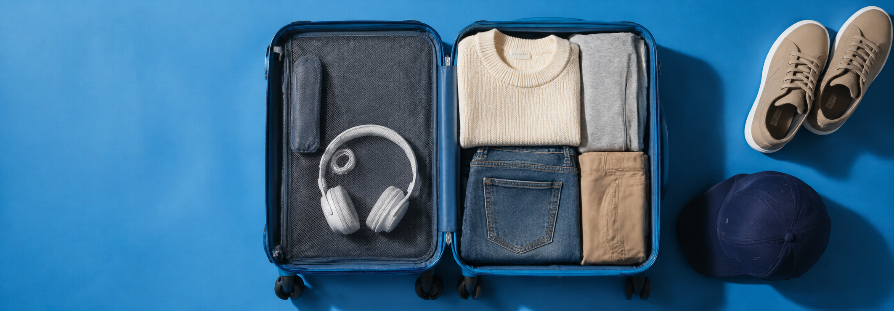

PackLight
TravelPack for the trip, not every possibility
Less to carry. More room to roam.
Start with your days away, laundry plans and must-do activities. Build a small wardrobe you can wear more than once.

Pack for the trip, not every possibility
Start with your days away, laundry plans and must-do activities. Build a small wardrobe you can wear more than once.
